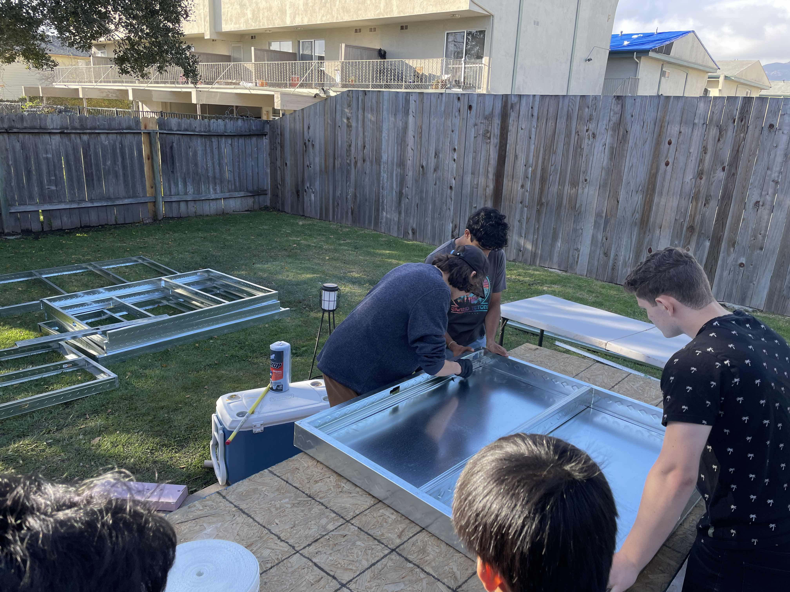

Formula SAE - Gaucho Racing
Over the summer of 2023 Firefly donated a bunch of experied pre-preg carbon fiber to Gaucho Racing. We decided that using pre-preg over wet laying fiberglass had enough benefits to warrant searching for a way to use it. Our first obstacle was storage, the material datasheet advised to store the carbon fiber at very low temperatures to prevent the epoxy from curing.
Eventually we found a lab on campus with a walk in refrigerator that allowed us to store our giant rolls of pre-preg, shout out CNSI. However, now we needed a way to cure the carbon fiber, which entailed an oven that could fit our largest element and also reach 350 degrees fahrenheit. We contacted local companies and searched on campus but were unable to find any curing ovens that we could use, so we decided to design and make our own.
Our first step was to create a list of requirements that our design had to fulfill, and then verify that we could feasibly fullfill those requirements. Using the curing cycles on the material datasheet and the sizes of all of our elements we set the requirements, temperature, temperature rate, size, and safety. We planned to wire the oven ourselves so we were limited to only using 120v by our school. Using heat transfer calculations we found the total heat loss and energy required to heat the inside of the oven, and from that we determined that we would need a minimum of 3 120v circuits. The first two circuits would pull 14 A to power our heating elements and the last circuit would power our temperature PID controller and circulation fan.
After multiple design reviews with the staff engineers in the mechanical engineering department we finalized the design, bought all the components, and began manufacturing.
